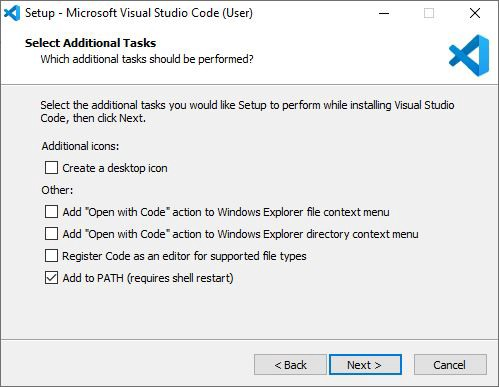

Download
Git
Click link for download
https://git-scm.com/downloads
When the download is complete will get the installation file Please double click to install.
When double click will show the installation screen, click Next.
Select the components you want to install, then click Next.

Select the Default Editor to use for Git, then click Next.
Select the desired topic as follows:
This page recommends you to click Next.
Select the desired topic as follows:
This page recommends you to click Next.
Click Install and wait for the installation to complete.
Python
Click link for download
https://www.python.org/downloads
Select Python version.
Choose your preferred platform.
After you have successfully downloaded the Python language Next will install Python on your computer.
Click on “Add Python 3.8 to PATH” to allow the system to set the PATH so that Python can automatically work with the command line everywhere. Click on “Install now".

After the installation is complete, click “Close” to finish installing the Python language.
VScode
Click link for download
https://code.visualstudio.com
Double Click on programe to imported.
Click "Run"
Select "I accept the agreement" and click "Next>"
Select storage program(recommend Default) and click "Next>"
Click "Next>"
Select "create a desktop icon" and "Add to PATH" before click "Next>"

Click "Install"

Click "Finish"